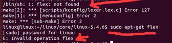

简介
level 9 ARM-ASM-A9
Keil找不到交叉编译工具链Error：failed to execute ‘arm-none-linux-gnueabias’
keil执行没有读写权限
超级终端或者putty无打印
汇编 mov指令mov R1，1234报错
点灯实验汇编版
点灯实验C语言版
串口实验
level 10 系统移植
TFTP环境搭建
NFS环境搭建
make uImage时找不到mkimage commond not found -U-Boot image will not be built
make menuconfig配置内核相关问题
找不到ncurses库Unable to find the ncurses libraries or the required header files
没有bio.h文件或目录fatal error: openssl/bio.h: No such file or directory
flex找不到：/bin/sh: 1: flex not found
u-boot编译相关问题
make [splu-boot-spl.bin] Error 2
文件系统挂不上
Published with GitBook
flex找不到：/bin/sh: 1: flex not found
flex找不到：/bin/sh: 1: flex not found
问题描述：

解决方法：
sudo apt-get install flex
results matching "
"
No results matching "
"